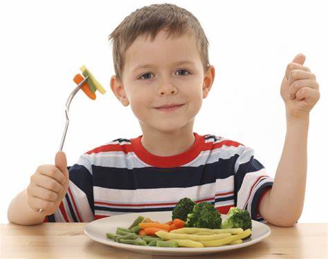
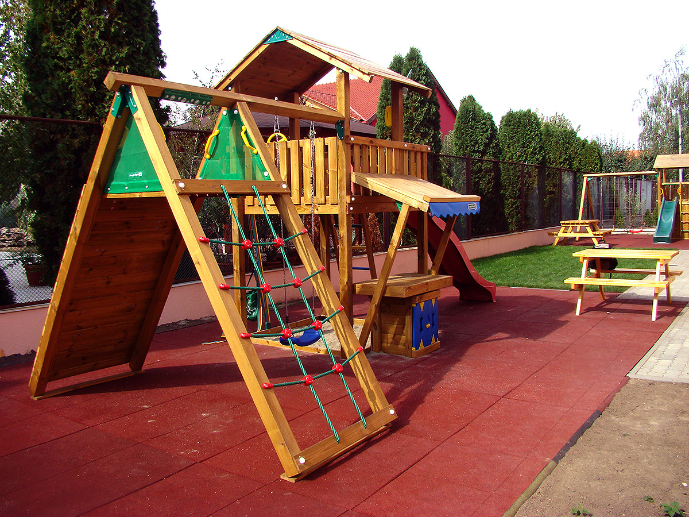
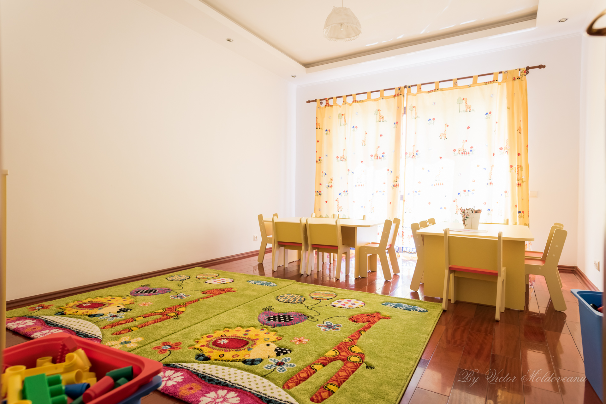

The Land where Elites Gather Together to Plan a Bright Future!
Celebrating our 1st Priority in Cuyahoga County - Our Childern, Our Future!
Our Philosophy
CleverLand has become synonymous with quality care,
and adopts a practical child-centred approach, where
children are respected as individuals and encouraged
to learn and develop at their own pace within a home
from home environment.
At CleverLand we feel very privileged that we have some amazing people working with us,
our team strives to provide the best service to our families and we are proud
of this.
Quality Childcare
CleverLand is providing quality childcare and education in close cooperation with Children's parents.

Our nurseries are designed to suit the needs of young children:
With large play areas using natural light
All complete with modern indoor equipment
A variety of age appropriate toys
Secure access systems throughout
Benefits of an outdoor space offering age appropriate equipment.
Outdoor stimulating features, sensory play areas, sandpits, wildlife areas and playhouses.
CleverLand Nurseries combine caring with education by following the appropriate curriculum.
CleverLand believe that learning should be stimulating for young children, so play times are
educational as well as fun. CleverLand's teachers are continuously developing new and
attractive ways of encouraging child development in a safe and stimulating environment.
Childcare initiatives have been developed by our Childcare and Curriculum team inline
with the Early Childhood Education (ECED), Help me Grow, Mountessori and ODJSF.
Our nurseries also offer a range of extra curricular activities, which may include
Spanish, French, Baby Yoga, Soccer and Dance.
Our Personel
We offer a safe, caring and stimulating environment and a first class early years education for children from 6 months to
5 years old during term time and from 6 months – 8 years of age during the school holidays.
We have a bespoke enclosed play area where we strive to reflect all learning areas.
Skilful early years educators, provide a special place where children are
the centre of everything, filling their hearts and minds with a sense of
awe and wonder on their individual learning journey, while giving them
the confidence to develop their own theories about the world.
We work hard to make sure our children have the right skills for school.
Each child is unique and we individually nurture each and
every one to make sure they are the best they can possibly be.
The needs of the individual child are paramount in all our childcare facilities,
and CleverLand's personel works together to create initiatives, supply resources
and provide outstanding care to ensure every child’s interests, safety and
happiness is central to everything we do.
Play equipment
A range of play equipment is available to help children develop an array of skills,
and great care is taken to choose materials that will create an inspiring sensory
experience. As well as toys, we use;


Real life props, such as brushes and gardening tools
Small-world toys to help build a child's imagination and language skills
Construction play such as building blocks, to help children develop fine motor skills,
spatial awareness and problem solving
Physical play equipment such as tricycles, balancing beams and tunnels to encourage physical activity
Creative play to build a child’s imagination, creativity and co-ordination
Supporting social interaction, including role play, den making, and small group activities
Key people
A friendly atmosphere is created within our CleverLand environments, based on warm and caring relationships
between our CleverLand staff and the children in their care.
Babies are encouraged to communicate, and their attempts
at conversation are valued to ensure they receive an affirming
experience, encouraging development, confidence and security.
Our CleverLand staff all act as role models within the setting,
and recognise that children lead by example and are constantly
learning through observation. Common courtesy, mutual respect
and patience are demonstrated at all times throughout our settings.
Your child is allocated a 'Key Person' within their room, who is
responsible for your child's well being, ensuring your child feels individual,
secure and cherished while they are away from home. Your child’s Key Person
will liaise with you at the end of each day, keeping you informed of your child’s
experiences at CleverLand and ensuring you don’t have to miss out on any aspect of your
child's day by completing the child journal.
CleverLand staff carry out regular observations of every child in our care,
ensuring your child’s learning and development incorporates their interests
and needs. These observations cover all areas of learning according to the framework,
as well as records of special moments, like kindness towards others or eating something
for the first time, and spontaneous moments, which captures your child’s response to certain
activities or events as they happen. All of your child's experiences at CleverLand are recorded
in their unique Learning Journal, enabling you to look over your child’s time at CleverLand for
years to come.